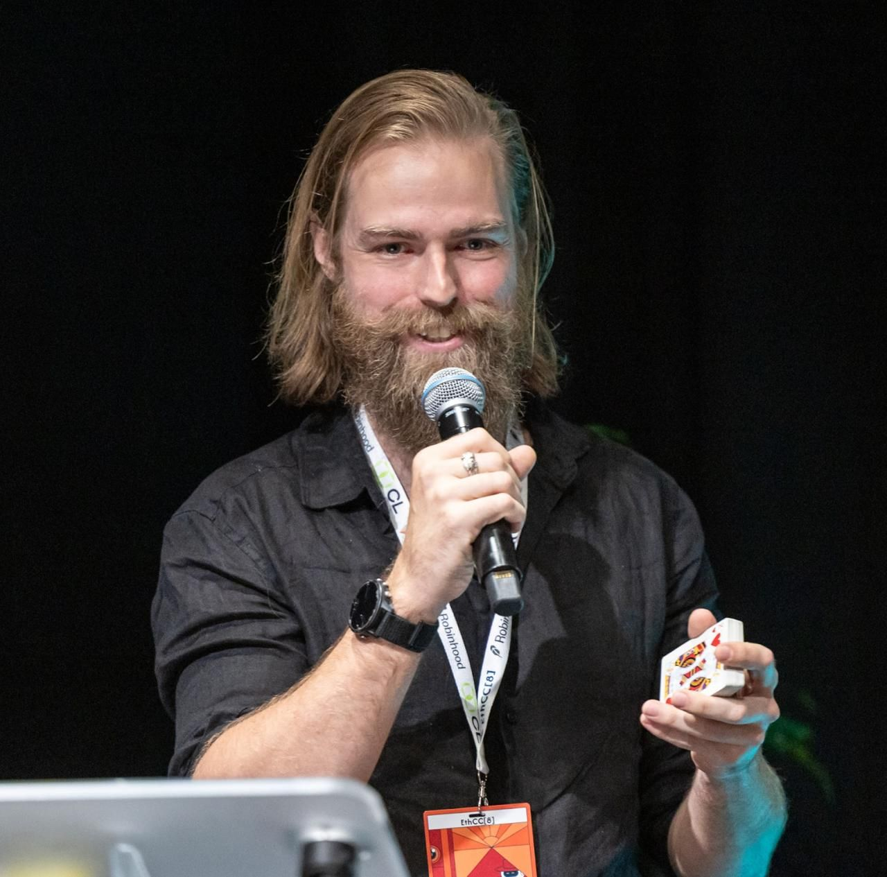

Making products feel like real magic
Learn how the principles of magic apply to creating digital products in web3. This presentation explores the difference between magical experiences and magic tricks, shows what some web3 teams have in common with the greatest magicians, and how they create experiences that are delightful, connecting, and memorable.